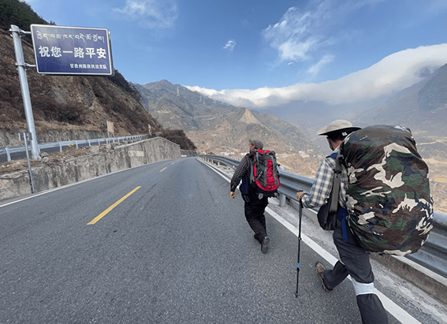
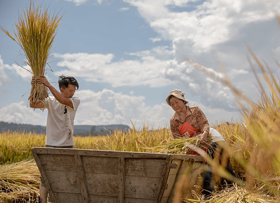

NATIONAL GEOGRAPHIC

$50 million fund to help amplify Black contributions to American history
HISTORY & CULTURE
African American historic landmarks have long been forgotten, neglected, and left in the dark. Spaces that have curated Black achievement, activism, and artistry traditionally have not received the same funding as other historic landmarks. Now, these historic spaces will receive support as the National Trust for Historic Preservation has created a $50 million fund to preserve African American cultural landmarks.
The African American Cultural Heritage Action Fund, the largest effort of its kind to preserve African American historic sites, announced today that it will invest in 40 projects that amplify Black history and culture. Created in 2017, the fund has supported more than 105 sites in its national grant program. So far, $7.3 million has been invested in projects around the country.
“It's exceptionally important that the Black experience is preserved and visible upon the American landscape,” said Brent Leggs, executive director of the fund. “It's important that we tell these stories that are overlooked to equitably understand what it means to be American. It's important that we invest in historic Black communities to stimulate revitalization and to foster interest in places that today seem to exist without history.”
The 2021 grants, given to a range of organizations including churches, libraries, museums, universities, arts centers and community theaters, represent the largest grant distribution since the fund was created. During its first three years, the fund raised nearly $30 million, primarily due to contributions from The Andrew W. Mellon Foundation and the Ford Foundation.
“We are delighted that the Action Fund continues to affirm the centrality of Black voices and experiences to historical preservation in the United States, and to broaden public awareness of the significance of these landmarks,” said Elizabeth Alexander, president of The Andrew W. Mellon Foundation. “The 2021 grantees which range from museums and public libraries to theaters, historic churches, and universities represent vital cultural sites that enrich our cities, small towns, and rural communities, and that serve as a testament to the fortitude and ingenuity of the African Americans who created them.”
The fund is a lifeline for many historic locations struggling to hang on. For the Robbins Historical Society and Museum in Robbins, Illinois, Director and Curator Tyrone Haymore said Wednesday the fund is keeping the museum alive. The grant will help restore the roof of the building, which is in jeopardy of collapsing.
“It's going save us in a sense of we needed the funds to get into a new facility,” Haymore said. “Our current facility is quite small. It's only a 40 by 40 square foot building and it used to be a grocery store. We turned it into a museum, and our collection has far exceeded the space that that building can hold.”
Lonnie Bunch III, the first African American and first historian to serve as Secretary of the Smithsonian Institution, believes these grants will provide greater visibility for the historic landmarks being preserved. The fund is insuring that African American contributions are amplified rather than erased.
“These grants will positively impact 40 communities nationwide and result in the creation of a visible, preserved legacy of African American contributions,” Bunch said. “The fund is creating a lasting historical record, which demonstrates that African American narratives are integral to our nation and our shared future.”
Leggs said this fund will not only support the preservation of these historic sites, he hopes it also creates a pathway for them to be acknowledged to the same degree as other registered cultural sites.
“Through the preservation of African American landmarks, we are beginning the process of centering blackness in our democracy,” Leggs said. “A lot of the focus is not only on the permanent protection and preservation and activation of these important spaces. It's also helping to equip and empower these black cultural institutions that steward and care for these places and helping them to have the resources to steward these places at the same level as Thomas Jefferson's Monticello and George Washington’s Biltmore estate.”
Comments :
- john Very good
- john Very good
Leave a Reply
Your email address will not be published. Required fields are marked*
Related posts:
-
Walking in the footsteps of China’s historic caravans of tea porters
Meet Chen Shou Kang: friendly, bald, energetic even in his 80s, the unofficial historian of the village of Wayao Guan, located in the lumpy mountains of western China. Chen is remembering the last beifu he ever saw
View article -
 Walking the Earth for 9 years plays tricks on your mind
Walking the Earth for 9 years plays tricks on your mindCall it your very first step on a 24,000-mile walk across the world. You take this inaugural stride in Ethiopia, in the Great Rift Valley of Africa, the paradise of thorns where humankind was born.
View article -
In this part of China, hands not machines define the rhythm of life
Watch them till the soil. How often have they done this chore? A thousand times? Ten thousand? More? Yet they are incapable of consistency. Over the course of their working life, they will never swing a hoe the same way twice
View article